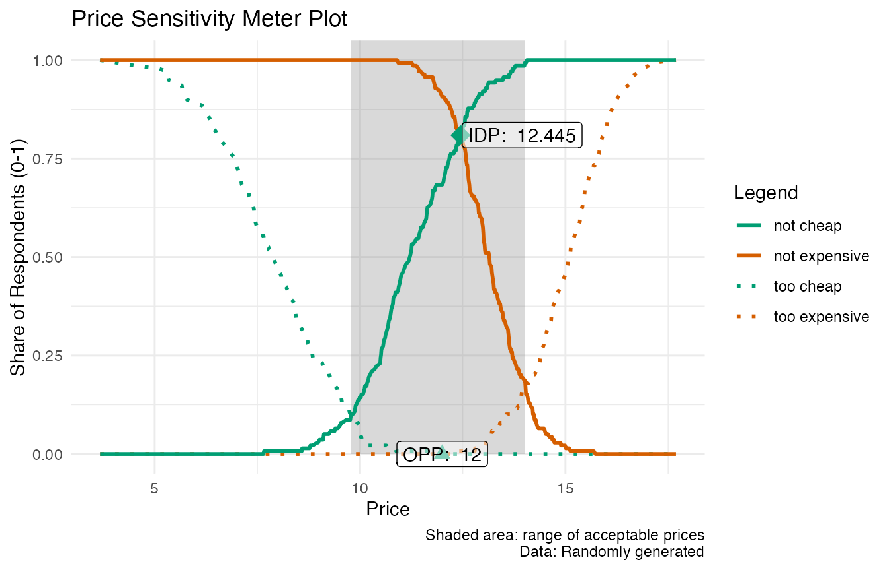

Visualizing PSM Results
Max Alletsee
2021-06-24
Source:vignettes/visualizing-psm-results.Rmd
visualizing-psm-results.RmdThe interpretation of the Price Sensitivity Meter analysis in its original publication1 focuses on a graphical inspection of the results. All relevant price points are defined by the intersection of two distribution functions, which are identified by visualizing the results. Even if this package provides a summary of the main results, most users will probably also be interested in visualizing them.
This vignette provides a short overview of efficient ways to provide visualizations of the results, both using R’s base graphics as well as the ggplot2 package. The plots are designed to show all main outcomes and can serve as a reference visualization, which may be reused for the purpose of a particular project.
Example Data
I will use the same set of (random) example data throughout this vignette.
library(pricesensitivitymeter)
set.seed(20)
toocheap <- round(rnorm(n = 250, mean = 8, sd = 1.5), digits = 2)
cheap <- round(rnorm(n = 250, mean = 12, sd = 2), digits = 2)
expensive <- round(rnorm(n = 250, mean = 13, sd = 1), digits = 2)
tooexpensive <- round(rnorm(n = 250, mean = 15, sd = 1), digits = 2)
# optional: purchase intent for "cheap" and "expensive price" (Newton Miller Smith Extension)
pi_cheap <- sample(x = c(1:5), size = length(cheap),
replace = TRUE, prob = c(0.1, 0.1, 0.2, 0.3, 0.3))
pi_expensive <- sample(x = c(1:5), size = length(expensive),
replace = TRUE, prob = c(0.3, 0.3, 0.2, 0.1, 0.1))
data.psm <- data.frame(toocheap, cheap, expensive, tooexpensive,
pi_cheap, pi_expensive)
output_psm <- psm_analysis(toocheap = "toocheap",
cheap = "cheap",
expensive = "expensive",
tooexpensive = "tooexpensive",
data = data.psm,
pi_cheap = "pi_cheap",
pi_expensive = "pi_expensive",
validate = TRUE)Using the Built-In Function
As of version v1.2, the package includes a built-in function psm_plot() that creates the “standard” Price Sensitivity Meter plot as known in the literature2 The psm_plot() function uses the object that is returned by psm_analysis() as the main input and has several plotting parameters that mainly can be activated and deactivated via TRUE/FALSE.
Below is a simple example of the default plot returned by psm_plot(). It is built using ggplot2 package and can be customized further with ggplot2’s plotting framework - in the example below, we simply add a different theme.
library(ggplot2)
default_psm_plot <- psm_plot(output_psm)
default_psm_plot + theme_minimal()The options how to adjust this plot, e.g. to show only selected lines or to adjust the line color/type, are discussed in the help of the psm_plot() function.
Using a Custom Approach
The built-in psm_plot() function offers an easy way for visualizing the results. The remainder of this vignette will show how to built a custom plot from scratch, ignoring the psm_plot() and just working with the elements that are stored in the object that is returned by psm_analysis().
The output_psm object from the example data at the beginning of this vignette contains the results which will be used for plotting. In particular, the slot data_vanwestendorp includes a dataframe with all prices that are included in the input data and the corresponding values of the cumulative distribution functions for the different price levels. Let’s have a quick look at one row in this dataset (row 260):
output_psm$data_vanwestendorp[260, ]
#> price ecdf_toocheap ecdf_cheap ecdf_expensive ecdf_tooexpensive
#> 260 12.99 0 0.07913669 0.4244604 0.02158273
#> ecdf_not_cheap ecdf_not_expensive
#> 260 0.9208633 0.5755396This means the following: For the price of 12.99, …
- 0% of respondents think that this price is not too cheap (not too cheap because the function for the “too cheap” answers is reversed in every Price Sensitivity Meter analysis as explained in the original article)
- 8% of respondents think that this price is cheap
- 42% of respondents think that this price is expensive
- 2% of respondents think that this price (or more) is too expensive
- 92% of respondents think that this price is not cheap - this is the inverse of
edfc_cheap(so both values always add up to 100%) - 58% of respondents think that this price is not expensive - this is the inverse of
edfc_expensive(so both values always add up to 100%)
We can now visualize this information for all the different price points.
ggplot: Standard Price Sensitivity Meter Results Visualization
Below is some example code that uses the information stored in the results object to create a graph that includes
- all possible price points
- a semi-transparent area to show the range of acceptable prices (between the Point of Marginal Cheapness and the Point of Marginal Expensiveness)
- the empirical cumulative distribution function for the “too cheap”, “not cheap”, “not expensive” and “too expensive” price perceptions
- highlights for the Indifference Price Point and the Optimal Price Point
library(ggplot2)
# all plot elements without any labels
psmplot <- ggplot(data = output_psm$data_vanwestendorp, aes(x = price)) +
annotate(geom = "rect", # shaded background area for range of acceptable prices
xmin = output_psm$pricerange_lower,
xmax = output_psm$pricerange_upper,
ymin = 0, ymax = Inf,
fill="grey50", alpha = 0.3) +
geom_line(aes(y = ecdf_toocheap, # line: too cheap
colour = "too cheap",
linetype = "too cheap"),
size= 1) +
geom_line(aes(y = ecdf_tooexpensive, # line: too expensive
colour = "too expensive",
linetype = "too expensive"),
size = 1) +
geom_line(aes(y = ecdf_not_cheap, # line: not cheap
colour = "not cheap",
linetype = "not cheap"),
size = 1) +
geom_line(aes(y = ecdf_not_expensive, # line: not expensive
colour = "not expensive",
linetype = "not expensive"),
size = 1) +
annotate(geom = "point", # Indifference Price Point (intersection of "cheap" and "expensive")
x = output_psm$idp,
y = output_psm$data_vanwestendorp$ecdf_not_cheap[output_psm$data_vanwestendorp$price == output_psm$idp],
size = 5,
shape = 18,
colour = "#009E73") +
annotate(geom = "point", # Optimal Price Point (intersection of "too cheap" and "too expensive")
x = output_psm$opp,
y = output_psm$data_vanwestendorp$ecdf_toocheap[output_psm$data_vanwestendorp$price == output_psm$opp],
size = 3,
shape = 17,
colour = "#009E73")
# Labels and Colours
psmplot +
labs(x = "Price",
y = "Share of Respondents (0-1)",
title = "Price Sensitivity Meter Plot",
caption = "Shaded area: range of acceptable prices\nData: Randomly generated") +
scale_colour_manual(name = "Legend",
values = c("too cheap" = "#009E73",
"not cheap" = "#009E73",
"not expensive" = "#D55E00",
"too expensive" = "#D55E00")) +
scale_linetype_manual(name="Legend",
values = c("too cheap" = "dotted",
"not cheap" = "solid",
"not expensive" = "solid",
"too expensive" = "dotted")) +
annotate(geom = "label", # Label of Indifference Price Point
x = output_psm$idp + 1.5,
y = output_psm$data_vanwestendorp$ecdf_not_cheap[output_psm$data_vanwestendorp$price == output_psm$idp],
nudge_x = 1.5,
label = paste("IDP: ", output_psm$idp),
fill = "white",
alpha = 0.5) +
annotate(geom = "label", # Label of Optimal Price Point
x = output_psm$opp,
y = output_psm$data_vanwestendorp$ecdf_toocheap[output_psm$data_vanwestendorp$price == output_psm$opp],
nudge_x = 1.5,
label = paste("OPP: ", output_psm$opp),
fill = "white",
alpha = 0.5) +
theme_minimal()
#> Warning: Ignoring unknown parameters: nudge_x
#> Warning: Ignoring unknown parameters: nudge_x
Base Plot: Standard Price Sensitivity Meter Results Visualization
Below is an additional example of the same plot, using R’s built-in plotting function. Note that there are a few slight differences, such as the lack of transparency in the shaded range of acceptable prices.
par(cex.sub = 0.66) # reducing the font size of the subtitle
# Setting up the plot: empty canvas
plot(x = output_psm$data_vanwestendorp$price,
y = output_psm$data_vanwestendorp$ecdf_toocheap,
type = "n",
xlab = "",
ylab = "")
grid() # adding gridlines
# Shaded Area: Range of Accetable Prices
rect(xleft = output_psm$pricerange_lower,
ybottom = 0,
xright = output_psm$pricerange_upper,
ytop = 1,
col = "grey85",
border = 0)
# adding line: too cheap
lines(x = output_psm$data_vanwestendorp$price,
y = output_psm$data_vanwestendorp$ecdf_toocheap,
lty = "dotted",
col = "#009E73")
# adding line: not cheap
lines(x = output_psm$data_vanwestendorp$price,
y = output_psm$data_vanwestendorp$ecdf_not_cheap,
lty = "solid",
col = "#009E73")
# adding line: not expensive
lines(x = output_psm$data_vanwestendorp$price,
y = output_psm$data_vanwestendorp$ecdf_not_expensive,
lty = "solid",
col = "#D55E00")
# adding line: too expensive
lines(x = output_psm$data_vanwestendorp$price,
y = output_psm$data_vanwestendorp$ecdf_tooexpensive,
lty = "dotted",
col = "#D55E00")
# adding the axes descriptions
title(main = "Price Sensitivity Meter Plot",
xlab = "Price",
ylab = "Share of Respondents (0-1)")
# Right-align of subtitle
adj.old <- par()$adj # saving old default value (= centered)
par(adj = 1) # setting the new default to right-align
title(sub = "Shaded area: Range of acceptable prices.\nData: Randomly generated") # writing the actual subtitle
par(adj = adj.old) # restore standard (so that next main title is again centered)
# adding the Indifference Price Point (intersection of "cheap" and "expensive")
points(x = output_psm$idp,
y = output_psm$data_vanwestendorp$ecdf_not_cheap[which(output_psm$data_vanwestendorp$price == output_psm$idp)],
cex = 2,
pch = 18,
col = "#009E73")
text(x = output_psm$idp,
y = output_psm$data_vanwestendorp$ecdf_not_cheap[which(output_psm$data_vanwestendorp$price == output_psm$idp)],
labels = paste("IDP:", output_psm$idp),
pos = 4)
# adding the Optimal Price Point (intersection of "too cheap" and "too expensive")
points(x = output_psm$opp,
y = output_psm$data_vanwestendorp$ecdf_toocheap[which(output_psm$data_vanwestendorp$price == output_psm$opp)],
cex = 2,
pch = 17,
col = "#009E73")
text(x = output_psm$opp,
y = output_psm$data_vanwestendorp$ecdf_toocheap[which(output_psm$data_vanwestendorp$price == output_psm$opp)],
labels = paste("OPP:", output_psm$opp),
pos = 4)
# adding legend
legend("bottomleft",
title = "Legend",
c("too cheap", "not cheap", "not expensive", "too expensive"),
lty = c("dotted", "solid", "solid", "dotted"),
col = c("#009E73", "#009E73", "#D55E00", "#D55E00"),
cex = 0.66)ggplot: Optimal Trial and Revenue (based on Newton Miller Smith Extension)
When we have information of the purchase intent at the “cheap” and at the “expensive” price point, we can also model the optimal price to maximize trial or revenue based on the Newton Miller Smith Extension
library(ggplot2)
# Plot for Optimal Trial
ggplot(data = output_psm$data_nms, aes(x = price)) +
geom_line(aes(y = trial)) + # trial curve
geom_vline(xintercept = output_psm$price_optimal_trial,
linetype = "dotted") + # highlighting the optimal price
geom_text(data = subset(output_psm$data_nms, trial == max(trial)),
aes(x = price + 0.5, y = trial),
label = paste("Optimal Price:", output_psm$price_optimal_trial),
hjust = 0) + # labelling the optimal price
labs(x = "Price", y = "Likelihood to Buy (Trial)",
title = "Price Sensitivity Meter: Price for Optimal Trial",
caption = "Data: Randomly generated") +
theme_minimal()
# Plot for Optimal Revenue
ggplot(data = output_psm$data_nms, aes(x = price)) +
geom_line(aes(y = revenue)) + # revenue curve
geom_vline(xintercept = output_psm$price_optimal_revenue,
linetype = "dotted") + # highlighting the optimal price
geom_text(data = subset(output_psm$data_nms, revenue == max(revenue)),
aes(x = price + 0.5, y = revenue),
label = paste("Optimal Price:", output_psm$price_optimal_revenue),
hjust = 0) + # labelling the optimal price
labs(x = "Price", y = "Revenue",
title = "Price Sensitivity Meter: Price for Optimal Revenue",
caption = paste("Combined revenue for a sample of n =",
output_psm$total_sample - output_psm$invalid_cases,
"respondents\nData: Randomly generated")) +
theme_minimal()Base Plot: Optimal Trial and Revenue (based on Newton Miller Smith Extension)
Below are versions of the same plots with R’s base plot function instead of ggplot2. For those simpler plots, the differences between ggplot and base plot are less pronounced.
par(cex.sub = 0.66) # reducing the font size of the subtitle
# a) Plot for Optimal Trial
# Main plot: Line, axis descriptions
plot(x = output_psm$data_nms$price,
y = output_psm$data_nms$trial,
type = "l",
main = "Price Sensitivity Meter: Price for Optimal Trial",
xlab = "Price",
ylab = "Likelihood to Buy (Trial)")
grid() # adding gridlines
# Right-align of subtitle
adj.old <- par()$adj # saving old default value (= centered)
par(adj = 1) # setting the new default to right-align
title(sub = "Data: Randomly generated") # writing the actual subtitle
par(adj = adj.old) # restore standard (so that next main title is again centered)
# drawing additional line to highlight optimal price
abline(v = output_psm$data_nms$price[which.max(output_psm$data_nms$trial)],
lty = "dotted")
# annotating the optimal price
text(x = output_psm$data_nms$price[which.max(output_psm$data_nms$trial)],
y = max(output_psm$data_nms$trial),
labels = paste("Optimal Price:", output_psm$price_optimal_trial),
pos = 4)
# b) Plot for Optimal Revenue
# Main plot: Line, axis descriptions
plot(x = output_psm$data_nms$price,
y = output_psm$data_nms$revenue,
type = "l",
main = "Price Sensitivity Meter: Price for Optimal Revenue",
xlab = "Price",
ylab = "Revenue")
grid() # adding gridlines
# Right-align of subtitle
adj.old <- par()$adj # saving old default value (= centered)
par(adj = 1) # setting the new default to right-align
title(sub = paste("Combined revenue for a sample of n =",
output_psm$total_sample - output_psm$invalid_cases,
"respondents\nData: Randomly generated")) # writing the actual subtitle
par(adj = adj.old) # restore standard (so that next main title is again centered)
# drawing additional line to highlight optimal price
abline(v = output_psm$data_nms$price[which.max(output_psm$data_nms$revenue)],
lty = "dotted")
# annotating the optimal price
text(x = output_psm$data_nms$price[which.max(output_psm$data_nms$revenue)],
y = max(output_psm$data_nms$revenue),
labels = paste("Optimal Price:", output_psm$price_optimal_revenue),
pos = 4)
Van Westendorp, P (1976) “NSS-Price Sensitivity Meter (PSM) – A new approach to study consumer perception of price” Proceedings of the ESOMAR Congress, 139–167. Online available at the ESOMAR website.↩︎
See for instance figure 5 in the appendix of the original publication: Van Westendorp, P (1976) “NSS-Price Sensitivity Meter (PSM) – A new approach to study consumer perception of price” Proceedings of the ESOMAR Congress, 139–167. Online available at the ESOMAR website.↩︎